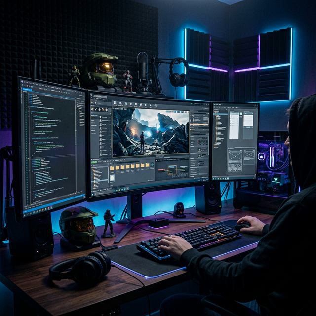
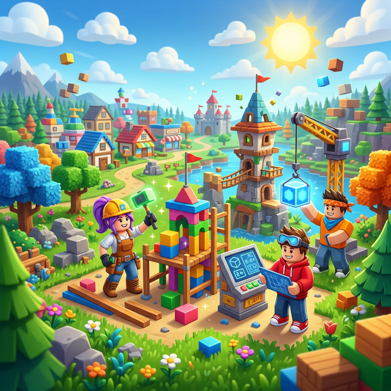
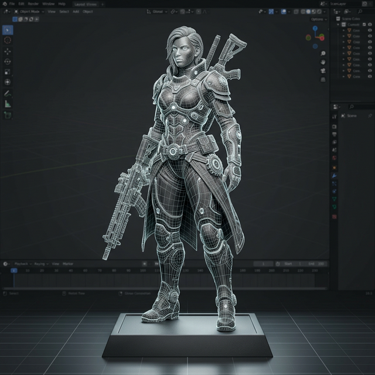

Game Development
Creación de mundos inmersivos en Unreal Engine y Unity.
VR Experiences
Realidad virtual de vanguardia para cualquier sector.



Producción Multimedia
Edición de video y efectos visuales cinemáticos.
Project Management
Gestión ágil para proyectos multimedia complejos.